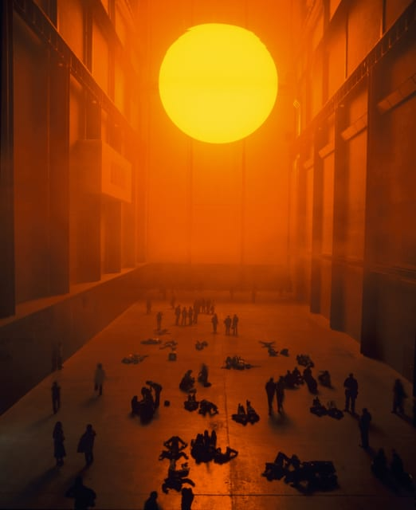
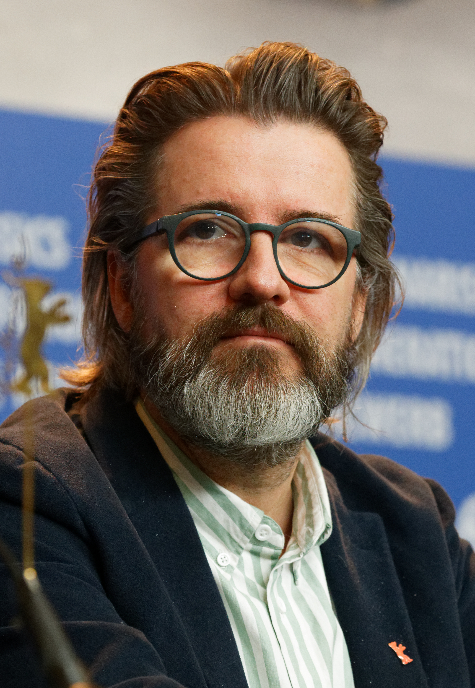

MetroArte
Obra en contexto y referente semanal
Constelación II
Pablo McClure · 1994

Constelación II — Estación Los Héroes, Santiago

Detalle de la obra
Constelación II es un políptico de gran escala instalado en ambos andenes de la Estación Los Héroes. La obra despliega un universo abstracto y cósmico.Líneas sinuosas, zonas sombreadas y texturas densas que en su conjunto construye una imagen de cielo que baja hacia la tierra.
El elemento más singular es la pared de espejos dispuesta frente a la pintura: los trenes, los pasajeros y el movimiento constante del metro se integran en la composición, haciendo que la obra nunca se vea exactamente igual. En sus primeros días, las personas perdían el tren por jugar con sus propios reflejos.
"En su obra es el cielo el que baja y se interna en la tierra y que, además, se refleja entre el vaivén de los trenes y los pasajeros."
— MetroArte, Metro de SantiagoPablo McClure
Santiago, 1955
Pintor y arquitecto chileno. Estudió pintura desde los años 70 y obtuvo el título de arquitecto en la Universidad Católica de Valparaíso (1981). En 1988 viajó a España, donde trabajó con el pintor Manuel Viola y mantuvo correspondencia con Roberto Matta, con quien compartía una sensibilidad abstracta y cósmica.
Su formación dual (arquitecto y pintor) es clave para entender Constelación II: hay en la obra una conciencia del espacio que va más allá del cuadro, pensada en relación directa con el lugar que la contiene y con el cuerpo de quienes la habitan.
Olafur Eliasson
Copenhague, 1967 - Instalación · Mediación · Percepción

Agregar imagen'">The Weather Project - Tate Modern, Londres, 2003

Agregar imagen'">Olafur Eliasson
Eliasson es conocido por sus instalaciones a gran escala que usan luz, agua, temperatura y espejos para transformar la percepción del espacio. Lo que distingue su práctica es que el visitante no es espectador pasivo: es parte activa y necesaria de la obra.
En The Weather Project (2003), un sol artificial llenaba la Turbine Hall del Tate Modern. El techo era un espejo: la gente se tumbaba en el suelo para verse reflejada, colectivamente, bajo una luz que no existía. La mediación ocurría sin mediador, la obra creaba las condiciones y el público completaba el sentido.
Esta operación dialoga directamente con lo que McClure logra en Constelación II: los espejos que devuelven al pasajero su propia imagen dentro de la obra, convirtiéndolo, sin que lo busque, en parte de la composición.
"Lo que me interesa principalmente son las personas, las personas dentro de un espacio o espacios alrededor de personas."
— Olafur Eliasson